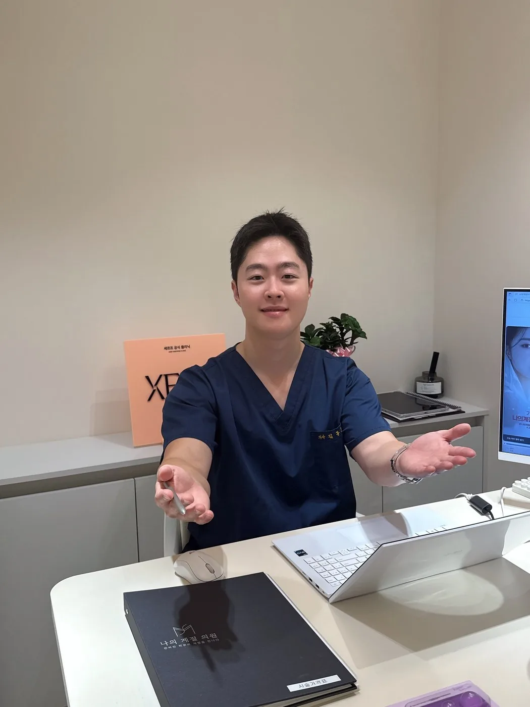

울산리프팅필러 이력이 있을 때 다음 시술 전 알려야 할 정보

이전 필러가 남아 있는지, 어떤 제품이었는지, 제거한 적이 있는지는 다음 계획을 바꿉니다. 기록이 없을 때 정리하는 방법과 혈관 관련 위험 신호를 함께 정리했습니다.
줄어 보여도 남아 있을 수 있습니다
히알루론산 필러는 시간이 지나며 분해되지만, 겉으로 볼륨이 줄어 보인다고 모두 사라졌다고 단정할 수 없습니다. 남아 있는 제품 위에 새 제품을 더하면 예상과 다른 모양이나 덩어리가 생길 수 있으므로, 제품명과 시기, 제거 시술 여부, 만져지는 부위를 알려야 합니다.
기록을 잃어버렸다면 시술받은 병원에 진료 기록 사본을 요청하거나, 시기와 부위만이라도 정리해 가세요. 추측으로 제품명을 적는 것보다 “모른다”고 알리는 편이 안전합니다.
제거·수정에도 별도의 위험이 있습니다
히알루론산 분해 효소로 필러를 녹이는 처치는 모든 필러에 적용되지 않으며, 효소 자체에 대한 알레르기 반응 등 별도의 위험이 있습니다. 새 시술을 계획하기 전에 기존 상태를 평가하는 과정과 추가하는 판단을 구분해 설명받으세요.
즉시 진료가 필요한 신호
필러 후 평소와 다른 심한 통증, 피부가 희거나 회색·푸른색·그물 모양으로 변하는 증상, 시야 변화는 혈관 관련 문제의 신호일 수 있습니다. 예약된 경과 확인일까지 기다리지 말고 즉시 병원에 연락해 진료받아야 합니다. 시술 전에 연락 방법과 응급 시 대응을 안내받아 두세요.
상담 전 확인할 내용
- 이전 필러의 제품명·부위·날짜, 제거 처치 여부와 당시 반응
- 만져지는 덩어리, 좌우 차이, 눌렀을 때 불편한 부위
- 복용약(출혈에 영향을 주는 약 포함), 알레르기, 임신·수유 여부
위험과 주의사항
멍, 붓기, 결절, 비대칭, 감염 등의 위험이 있습니다. 드물게 혈관 손상으로 피부 괴사나 시력 손상이 생길 수 있습니다. 심한 통증, 피부가 희거나 회색·푸른색으로 변하는 증상, 시야 변화는 즉시 진료가 필요한 신호입니다.
본 글은 상담 준비를 위한 일반 정보입니다. 국내 사용 제품·장비와 허가사항, 개인별 적용 여부와 회복은 의료진의 진료를 통해 확인하세요.
울산리프팅필러 시술별 적용 여부와 주의사항 더 보기 ↗카테고리 리프팅필러